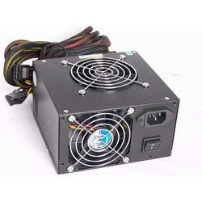

What is SMPS ?
A switched-mode power supply (SMPS) is an electronic circuit that converts power using switching devices that are turned on and off at high frequencies, and storage components such as inductors or capacitors to supply power when the switching device is in its non-conduction state

How would having a SMPS help a computer?
It is a PSU (power supply unit) and is usually used in computers to change the voltage to the appropriate range for the computer. An SMPS adjusts output voltage and current between different electrical configurations by switching the basics of typically lossless storage such as capacitors and inductors.
What are the types of SMPS?
Switched Mode Power Supplies or SMPS can be classified into two types based on its circuit topology: Non-isolated Converters and Isolated Converters. Non – isolated Converters are a type of SMPS Topology where the switching circuit and output are not isolated i.e. they have a common terminal.